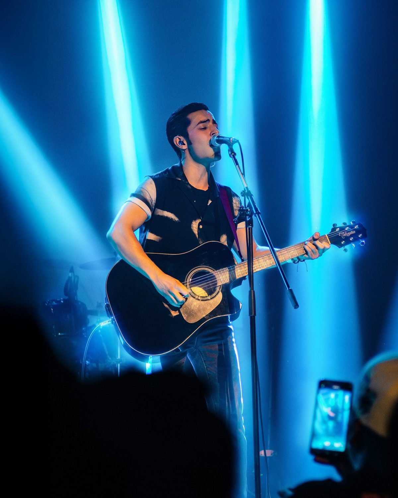
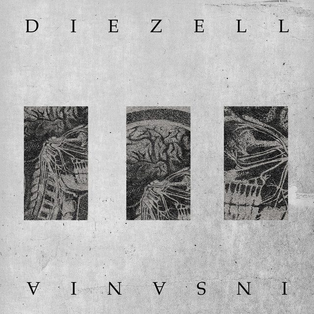
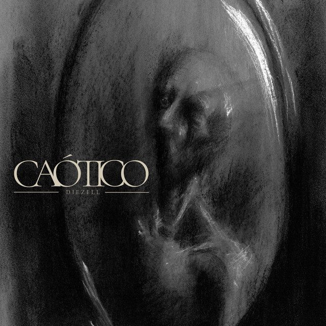
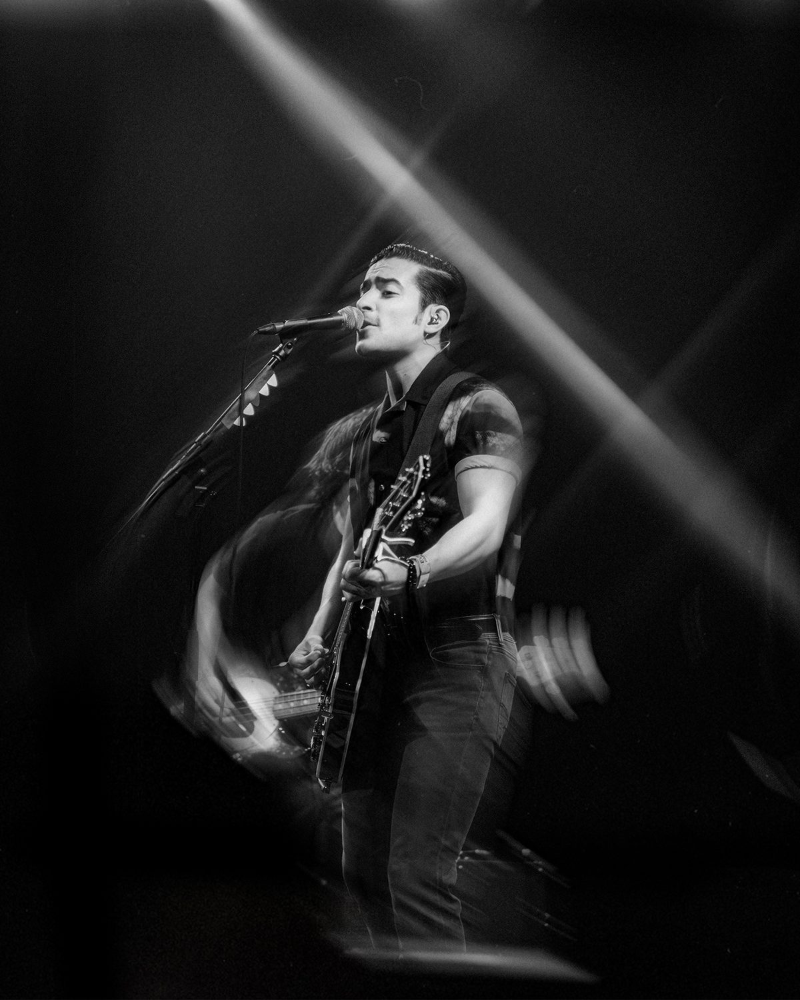
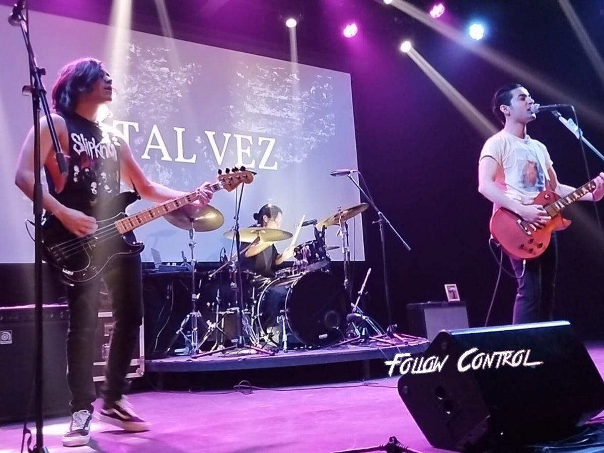
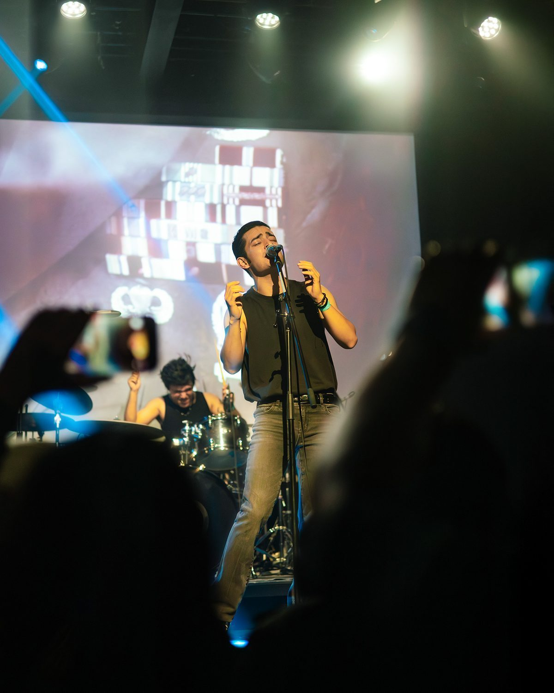
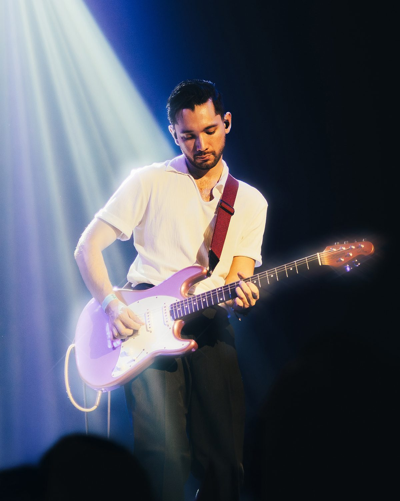
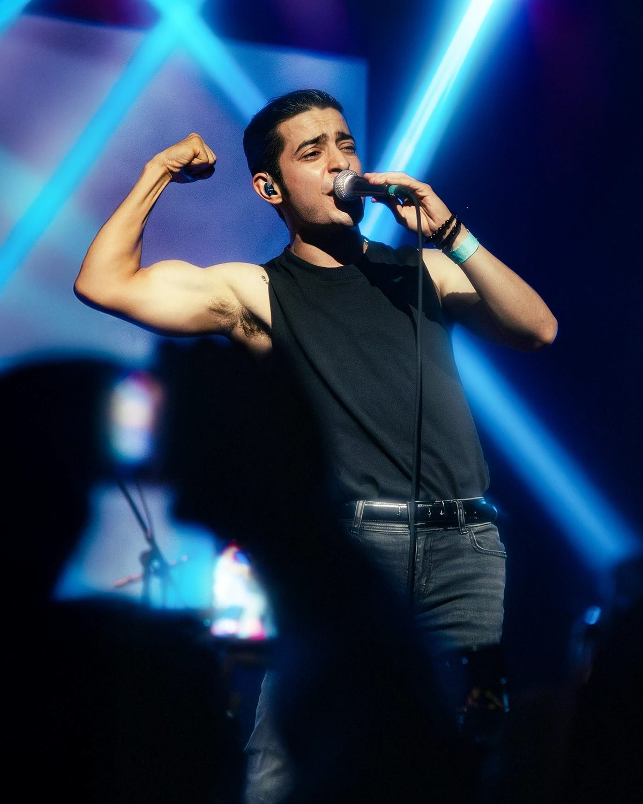

Foto: Balleza Photography, Behance, 9 feb 2026. Fuente ↗
Pop punk · Monterrey
DIEZELL
El segundo álbum ya suena: INSANIA
Banda de Monterrey formada como proyecto original en 2018. Su segundo álbum, INSANIA, salió el 28 de noviembre de 2025. El Insania Tour 2026 recorrió 9 ciudades y cerró el 13 de noviembre en Foro Corona, Monterrey.
Último concierto registrado: 13 nov 2026 · Foro Corona, Monterrey — cierre de gira. 6 de 9 fechas sold out. Sin fechas anunciadas.
01 · Música
El disco
Dos álbumes de estudio. INSANIA es un álbum conceptual: diez canciones como casos de una «autopsia emocional».
«Hace frío aquí, no pude salir / Cuesta respirar hacia el final»«Suspensión...» · INSANIA, pista 1

INSANIA
«Una etapa más cruda, intensa y emocional… ritmos más contundentes, atmósferas densas y una identidad sonora más definida, sin perder la esencia.»
— Puro Rock Puro, 16 dic 2025
La portada trae el título invertido: al derecho se lee VINVSNI. Por eso en algunos listados aparece mal leído.
- 01Suspensión...3:58
- 02Más Que Ayer, Menos Que Mañana3:29
- 03Días Felices: Los Lunes3:04
- 04Tus Flores Fueron Entregadas3:52
- 05El Último Soldado En Pie4:21
- 06El Monstruo De Gizmo3:41
- 07La Paradoja De Tennessee3:42
- 08Resiliencia3:50
- 09Donde Nada Puede Malir Sal3:44
- 10Una Triste Mañana de Noviembre3:01
INSANIA en Spotify ↗ Las 27 canciones

Caótico
29 de septiembre de 2023 · 11 canciones · 37:56
Caótico en Spotify ↗
02 · En vivo
El archivo de la gira
Insania Tour 2026: nueve ciudades en tres meses. La gira está cerrada; esto es el registro, no una agenda.
| Fecha | Ciudad | Recinto | Estado |
|---|---|---|---|
| 21 ago 2026 | Aguascalientes | Rocksí | Sold out |
| 22 ago 2026 | Guadalajara | C3 Rooftop | Sold out |
| 16 oct 2026 | Toluca | Foro Landó | Sold out |
| 17 oct 2026 | Querétaro | Centro Cultural El Árbol | Sold out |
| 23 oct 2026 | Puebla | Madre Santa Pulquería | Sold out |
| 24 oct 2026 | Ciudad de México | Fuck Off Room | Sold out |
| 6 nov 2026 | León | El Callejón | — |
| 7 nov 2026 | San Luis Potosí | Estación Wadley | — |
| 13 nov 2026 | Monterrey | Foro Corona · 21:00 | Cierre de gira |

Foto: Balleza Photography — «Diezell | Monterrey, Nuevo León», Behance, 10 dic 2025.

Primera Noche Caótica, enero de 2024. Foto: Follow Control.
Gira cerrada. Sin fechas anunciadas. Ver el archivo completo en vivo →
03 · La banda
Tres de Monterrey
Empezaron tocando covers en la calle Morelos, en el centro de Monterrey, en 2015. En 2018 se consolidaron como proyecto original.
- René GuzmánVoz
- José Bernardo «Bernie»Guitarra
- Emmanuel Batarse «Emmash»Batería · Producción

Foto: Balleza Photography — «Diezell | INSANIA», Behance, 9 feb 2026.

Foto: Balleza Photography — «Diezell | INSANIA», Behance, 9 feb 2026.
«El nombre de Diezell fue parte de una broma entre ellos y así se les quedó.» Follow Control, enero de 2024
04 · Caóticos
La comunidad
Unidos, jamás serán vencidos.
La comunidad de fans se organiza en cuentas como @caoticosmty, @caotico_gdl e @insanialovermty. El 29 de septiembre de 2026 celebraron el tercer aniversario de Caótico con carruseles de letras.

Foto: Balleza Photography — «Diezell | INSANIA», Behance, 9 feb 2026.
05 · Números
Diezell en números
Dos cifras, con fecha y fuente. Nada más: el resto vive en el archivo de datos.
Oyentes mensuales en Spotify.
Corte 15 nov 2026 · Music Metrics Vault. El 8 nov eran 44,822.
Reproducciones de «El Cuento De Aquel Imperfecto Ser» en Spotify.
La canción más escuchada de la banda · corte 15 nov 2026.